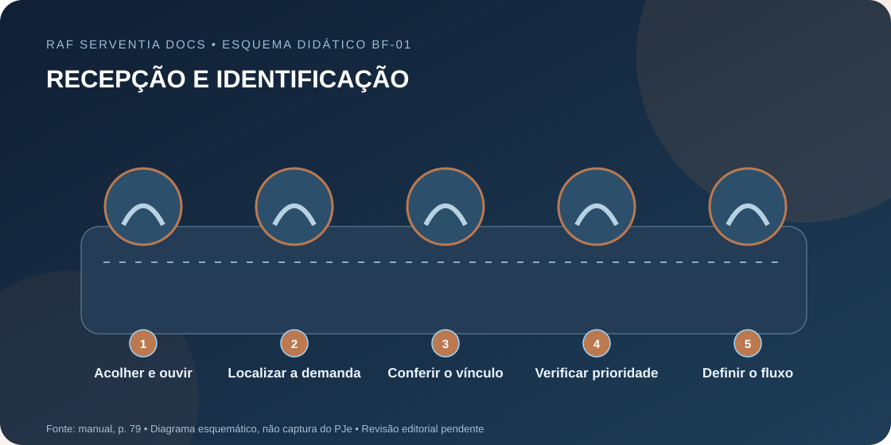
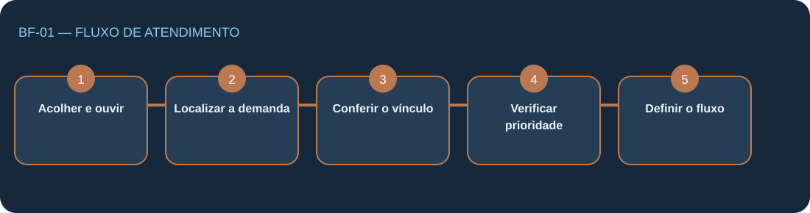

Acolher e ouvir
Identificar o motivo do comparecimento com linguagem respeitosa e clara.
O atendimento inicial no balcão físico identifica a demanda, a condição de quem comparece e o encaminhamento adequado, resguardando sigilo e atendimento prioritário.
Ilustração vetorial original, preparada especificamente para esta ficha. Não reproduz a interface oficial do PJe.

O atendimento inicial no balcão físico identifica a demanda, a condição de quem comparece e o encaminhamento adequado, resguardando sigilo e atendimento prioritário.
Trechos conferidos parcialmente com a fonte; revisão humana pendente.
Selecione os elementos para ler o significado. A ordem no mapa é de apresentação didática.

Clique ou use Tab e Enter para visualizar a explicação de cada elemento. A transcrição original pode ser consultada na aba Fonte.
Os itens abaixo explicam o conteúdo da fonte. Não representam autorização para movimentar autos.
Identificar o motivo do comparecimento com linguagem respeitosa e clara.
Perguntar sobre processo existente e número disponível sem expor autos de terceiros.
Distinguir parte, representante, advogado e acompanhante; dúvida de representação deve ser dirigida ao servidor.
Observar acessibilidade e atendimento prioritário sem exigir dados desnecessários.
Identificar consulta, juntada, petição genérica, audiência ou primeiro atendimento e encaminhar ao serviço adequado.
Este checklist verifica a leitura do material. Não registra nenhum ato processual.
Quando houver dúvida, consultar o infográfico original e o servidor responsável.
0 de 5 itens de leitura conferidos
Não. Trata-se de uma representação didática de leitura do manual, sem conexão com o PJe.
Não. A ficha está em revisão. Use a página original e a orientação do servidor responsável para conferência.
Fonte: Manual Operacional do Estagiário na Serventia — PJe, edição de 15/10/2026, página 79.

Página 79 — cinco passos e checklist do balcão físico. · Documento de uso originalmente classificado como restrito. Divulgação pública pelo autor; não implica homologação do TJRJ.